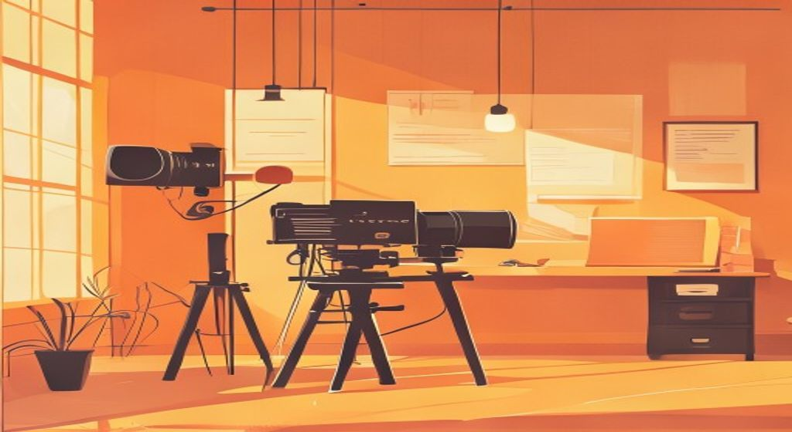
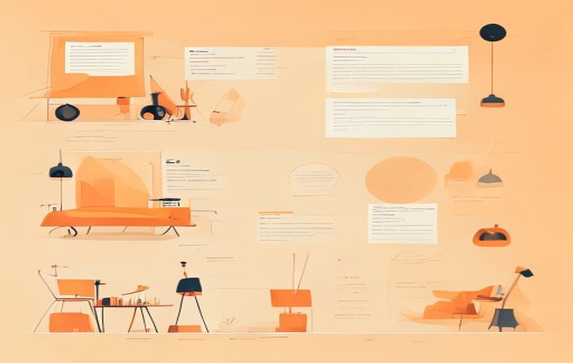
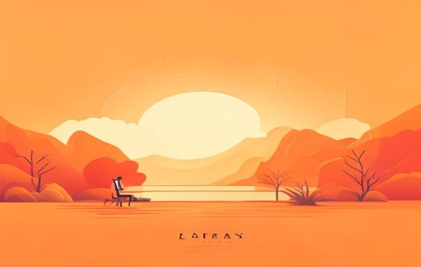

Del logline al guion técnico: aprende a construir una historia desde la idea hasta el plano — con formato profesional, diálogo real y estructura que el examen sí pregunta.

El guion es el plano de construcción de la película.
El guion audiovisual es el mapa de toda la producción: empieza con una idea de dos frases (logline) y termina con instrucciones plano a plano (guion técnico), pasando por sinopsis, escaleta, tratamiento y guion literario.
🧠 Los conceptos
Despliega cada tarjeta, léela con calma y márcala como entendida. La barra de arriba irá subiendo.
El guion audiovisual es el documento escrito que organiza, da sentido y hace posible una obra audiovisual. No es solo un texto: es la columna vertebral de toda la producción.
Sirve para tres cosas al mismo tiempo:
Guion audiovisual — «no es solo un texto: es el elemento vital que organiza, da sentido y hace posible la obra». Indica qué camino seguir, evita perderse durante el rodaje y permite que todos sepan a dónde van.
Funciones del guion audiovisual — 1) es la base de toda producción audiovisual; 2) define qué se cuenta y cómo se cuenta (imagen y sonido): la historia, el tono y el ritmo; 3) traduce una idea en un plan creativo y técnico; 4) integra narrativa, técnica y planificación.
Organiza / garantiza / coordina — el PDF lo resume en tres verbos: organiza la estructura narrativa (la historia y su estructura dramática), garantiza coherencia entre imagen y sonido (ritmo, acciones y diálogos) y coordina al equipo (herramienta de trabajo para dirección, cámara, sonido y arte).
Todo proyecto audiovisual sigue este camino, de lo más corto y general a lo más largo y detallado. Ojo: el examen pide ordenarlas y definirlas.

De la idea al guion: sinopsis, escaleta, tratamiento, guion.
| Nº | Documento | Extensión | Qué contiene |
|---|---|---|---|
| 1 | Logline | 1-2 frases | La película en un gancho: quién, qué quiere, qué se lo impide |
| 2 | Sinopsis | ~1 página | Resumen completo en prosa, con principio, giros y final |
| 3 | Escaleta (step outline) | 2-5 páginas | Lista numerada de escenas, 1-3 líneas cada una, sin diálogo |
| 4 | Tratamiento | 15-30 páginas | Prosa descriptiva escena a escena, sin diálogo, con tono y atmósfera |
| 5 | Guion literario | 1 pág ≈ 1 min | Acción + diálogo en formato estándar; base creativa |
| 6 | Guion técnico | Variable | Plano a plano: encuadres, movimientos de cámara, duración; guía de rodaje |
Proceso de creación — el PDF lo formula como «de lo general a lo particular: Idea → Sinopsis → Tratamiento → Escaleta → Guion literario → Guion técnico». ⚠️ Ojo al matiz para el examen: en el PDF la primera fase se llama Idea (el logline es la frase que la condensa) y el Tratamiento aparece antes que la Escaleta. Si te piden el orden "según los apuntes", usa el del PDF.
Idea — «núcleo de la historia: condensa el conflicto, el tema y la intención narrativa de la historia».

Logline, premisa y conflicto.
Antes de escribir nada, la historia necesita tres pilares: la premisa, el conflicto y el logline.
Es la idea central o mensaje que quiere transmitir la historia. La pregunta que el guion intenta responder. Ej. "El amor puede sobrevivir a cualquier obstáculo" (Titanic). "Un hombre sencillo puede cambiar el mundo sin saberlo" (Forrest Gump).
Es el motor de la historia: la tensión entre lo que el personaje quiere y lo que se lo impide. Sin conflicto, no hay historia. Puede ser externo (un villano, una catástrofe) o interno (un miedo, una contradicción moral).
Frase de 1-2 líneas que resume quién es el protagonista, qué quiere y qué se lo impide. Es el "gancho" que se usa para vender un proyecto. Estructura clásica:
Ejemplos reales:
«Logline» — el PDF lo define como «frase breve que condensa el argumento» (lo pone como ejemplo en Forrest Gump: «La vida es como una caja de bombones…»).
Idea — lo que aquí llamamos "premisa" el PDF lo trata dentro de la Idea: «núcleo de la historia; condensa el conflicto, el tema y la intención narrativa». La palabra "premisa" no aparece en el PDF: en el examen, mejor hablar de idea e intención narrativa.
Conflicto — el PDF habla de conflicto narrativo (el guion literario «se centra en la emoción y el conflicto narrativo») y de conflicto explícito o latente al hablar de la tensión en las escenas.
Resumen en prosa de toda la historia. Cuenta el principio, los giros principales y el final (es un documento de trabajo, no una promoción: tiene spoilers). En torno a una página.
Ejemplo de Forrest Gump: «Forrest Gump es un hombre con una discapacidad intelectual leve que, gracias a su bondad y perseverancia, se ve involucrado en los grandes acontecimientos de la historia reciente de EEUU…»
Lista numerada de escenas. Cada una tiene 1-3 líneas que explican qué pasa en esa escena, pero sin diálogos. Sirve para ver si la historia funciona antes de escribirla entera.
Formato de una entrada de escaleta:
INT. COCINA – DÍA. Juan desayuna solo. Recibe una llamada que cambiará su vida.EXT. CALLE – DÍA. Juan sale corriendo hacia el hospital.INT. HOSPITAL – DÍA. El doctor le da la noticia: su padre está vivo.
Sinopsis — definición exacta del PDF: «resume los hechos principales de forma clara y ordenada».
Escaleta — definición exacta del PDF: «organiza la historia en escenas: no incluye diálogos; permite visualizar el ritmo y la estructura general; ayuda a detectar escenas innecesarias o problemas de progresión dramática».
El tratamiento es la versión extendida de la sinopsis: describe el relato escena a escena en prosa, define el tono y la atmósfera, y presenta el arco narrativo de los personajes. Pero todavía sin diálogos.
Tiene entre 15 y 30 páginas en un largometraje. Es el documento con el que el director puede "ver" la película antes de que exista el guion literario.
Ejemplo de Forrest Gump en tratamiento: «Se describe la estructura narrativa (el banco, la voz en off). Desarrolla la evolución de Forrest y Jenny, explicando el recorrido emocional y temporal.»
Tratamiento — definición exacta del PDF: «el tratamiento amplía la sinopsis, pero sin llegar al guion: 1) describe el desarrollo del relato; 2) define el tono, el estilo y la atmósfera; 3) presenta el arco narrativo de los personajes».
Son los dos documentos finales y los más importantes. El examen casi seguro pregunta la diferencia.
| Guion literario | Guion técnico | |
|---|---|---|
| Para qué | Base creativa — "qué historia se cuenta" | Guía de rodaje — "cómo se filma exactamente" |
| Incluye | Encabezados de escena, descripción de acción, diálogo | Número de plano, tipo de plano, movimiento de cámara, duración, sonido |
| Planos | No; solo describe lo que se ve | Sí; plano a plano con numeración |
| Quién lo usa | Guionista, director, productor | Director, director de fotografía, toda la crew de rodaje |
| Regla clave | 1 página ≈ 1 minuto de metraje | Variable según complejidad de la escena |
| Elemento | Formato | Ejemplo |
|---|---|---|
| Encabezado (Slugline) | MAYÚSCULAS · INT/EXT · LUGAR · DÍA/NOCHE | INT. COCINA – DÍA |
| Acción | Tiempo presente, prosa visual | María entra mirando hacia atrás. |
| Personaje | Centrado, MAYÚSCULAS | MARÍA |
| Diálogo | Centrado, debajo del nombre | Tengo que decirte algo. |
| Acotación | Entre paréntesis, solo si es imprescindible | (en voz baja) |
| Transición | MAYÚSCULAS, a la derecha | CORTE A: |
Guion literario — «transmite experiencia: es la base creativa. Describe la historia, acciones y diálogos; describe espacios, atmósferas y acciones; no entra en detalles técnicos. Incluye diálogo, pero no planos ni movimientos de cámara. Se centra en la emoción y el conflicto narrativo. Sirve como base creativa para el guion técnico».
Guion técnico — «hace posible la ejecución: es la guía de producción. Traduce el guion literario a lenguaje audiovisual / a un plan de rodaje. Incluye planos, encuadres, movimientos de cámara, sonido y montaje. Detalla planos, movimientos de cámara, sonido e iluminación, y facilita la organización y ejecución de la producción».
Formato del ejemplo del PDF (Barbie, 2023) — el guion técnico se presenta en columnas: Nº PLANO · IMAGEN (plano / acción) · SONIDO, con tipos de plano como plano general, plano medio, primer plano y plano conjunto, más indicaciones de música, silencio y voz en off (V.O.).
El diálogo en cine no es como hablar en la vida real. Es un recurso narrativo estratégico: define la personalidad, muestra conflictos y transmite emociones. Las reglas que sí caen en examen:
Diálogo — «el diálogo es un recurso narrativo estratégico, no solo informativo: 1) define la personalidad de los personajes; 2) muestra relaciones y conflictos; 3) transmite emociones y tensiones».
Un buen diálogo se caracteriza por — «economía verbal: decir lo necesario, sin sobreexplicar (no decir en 10 palabras lo que se puede decir en 3); naturalidad: fluidez y verosimilitud; ritmo: réplicas rápidas, pausas o silencios según la escena».
Subtexto — «el subtexto es fundamental: lo que se dice no siempre coincide con lo que se siente; gestos, miradas y acciones refuerzan el significado oculto». Sus vehículos según el PDF: el lenguaje corporal, las pausas, el tono de voz y el contexto.
El arco de personaje es la transformación que vive el protagonista de principio a fin. Empieza con un defecto, una carencia o una creencia errónea, y la historia le fuerza a cambiarla (o no, si es una tragedia).
Ej.: Forrest Gump comienza siendo un niño con dificultades que no encaja → termina siendo un hombre que ha marcado el mundo sin buscarlo.
Cada escena debe cumplir al menos una de estas tres funciones:
La escena como unidad dramática básica — «la escena es la unidad mínima dentro del guion audiovisual. Cada escena debe entenderse como un bloque narrativo autónomo, pero integrado en el conjunto del relato. Su correcta construcción garantiza la fluidez, coherencia y progresión de la historia».
Función narrativa de cada escena — «ninguna escena debe ser gratuita o decorativa. Cada escena debe cumplir al menos una función clara: 1) avanzar la historia; 2) desarrollar personajes; 3) generar o aumentar la tensión». El "filtro" de la lección es lo que el PDF llama objetivo narrativo: «antes de escribir una escena, el guionista debe definir su objetivo narrativo» (¿qué debe ocurrir al final que no estaba al inicio?, ¿qué información nueva recibe el espectador?, ¿qué cambia en los personajes o en la situación?).
Arco narrativo de los personajes — es la expresión que usa el PDF (en la definición de tratamiento: «presenta el arco narrativo de los personajes»). En desarrollo de personajes habla de «mostrar la evolución del personaje a lo largo del relato» mediante acciones, reacciones, silencios o decisiones.
El guion no se escribe una sola vez. Se reescribe durante la preproducción y el rodaje: presupuesto, localizaciones, decisiones creativas del director. La reescritura es parte del proceso profesional, no un error.
Software estándar de la industria:
| Software | Qué es |
|---|---|
| Final Draft | El estándar de Hollywood. De pago, pero universal en la industria. |
| Celtx | Gratuito (versión básica). Suficiente para uso profesional en formación. |
| Fade In | Alternativa más asequible a Final Draft. Muy usada. |
| WriterDuet | Colaborativo en la nube (como Google Docs, pero para guionistas). |
| Highland 2 | Minimalista, basado en Fountain (markdown para guiones). |
El guion como documento vivo — «el guion audiovisual es un documento en constante evolución: se modifica durante la preproducción y el rodaje; puede adaptarse por cambios de presupuesto, limitaciones técnicas y decisiones creativas; la reescritura forma parte del proceso profesional; el objetivo es ajustar la forma sin perder la coherencia ni la intención narrativa; el trabajo colaborativo entre guionistas, directores y técnicos enriquece el resultado final» (ejemplo del PDF: los cambios de guion de Monsters, Inc.).
Flexibilidad del guionista — «el guion debe adaptarse a imprevistos, como cambios en localizaciones o ajustes de presupuesto, sin perder la esencia narrativa. En este sentido, la flexibilidad del guionista es tan importante como su capacidad creativa». (Los programas de software no aparecen en el PDF: son ampliación de la lección.)
📖 Vocabulario del examen
Cómo lo digo fácil → cómo lo llama el PDF (y como saldrá en el examen).
| En fácil | Término oficial del PDF |
|---|---|
| el "mapa" / plano de construcción de la película | Guion audiovisual — «elemento vital que organiza, da sentido y hace posible la obra»; «base de toda producción audiovisual» |
| las 6 fases de la idea al guion | Proceso de creación — «de lo general a lo particular»: Idea → Sinopsis → Tratamiento → Escaleta → Guion literario → Guion técnico (¡ese es el orden del PDF!) |
| la idea central / "premisa" | Idea — «núcleo de la historia: condensa el conflicto, el tema y la intención narrativa» |
| el gancho de 1-2 frases para vender la película | Logline — «frase breve que condensa el argumento» |
| el resumen completo de la historia (~1 página) | Sinopsis — «resume los hechos principales de forma clara y ordenada» |
| la historia en prosa larga, sin diálogos | Tratamiento — «amplía la sinopsis sin llegar al guion: describe el desarrollo del relato, define el tono, el estilo y la atmósfera, y presenta el arco narrativo de los personajes» |
| la lista numerada de escenas | Escaleta — «organiza la historia en escenas; no incluye diálogos; permite visualizar el ritmo y la estructura general; ayuda a detectar escenas innecesarias o problemas de progresión dramática» |
| el guion con la historia y los diálogos | Guion literario — «base creativa: incluye diálogo, pero no planos ni movimientos de cámara; se centra en la emoción y el conflicto narrativo» |
| el guion plano a plano para rodar | Guion técnico — «guía de producción: traduce el guion literario a un plan de rodaje; incluye planos, encuadres, movimientos de cámara, sonido y montaje» |
| cada escena tiene que servir para algo | Función narrativa de la escena — «ninguna escena debe ser gratuita o decorativa»: avanzar la historia / desarrollar personajes / generar o aumentar la tensión; la escena es «la unidad mínima del guion» (unidad dramática básica) |
| lo que se dice no es lo que se siente | Subtexto — «lo que se dice no siempre coincide con lo que se siente; gestos, miradas y acciones refuerzan el significado oculto» |
| el guion se reescribe durante la producción | El guion como documento vivo — «documento en constante evolución; la reescritura forma parte del proceso profesional» |
🃏 Flashcards
Toca cada tarjeta para girarla. Tapa la definición con la mano y comprueba si te la sabes.
✅ Test rápido
5 preguntas tipo examen. Elige una opción y te corrige al momento con la explicación.
⭐ Preguntas del examen — Práctica obligatoria
La presentación no tiene diapositivas de autoevaluación literal, pero el examen tiene práctica casi segura: escribir un logline y/o una escaleta. Aquí tienes 3 preguntas de práctica preparadas.
Logline: «Cuando una joven diseñadora descubre que su obra más ambiciosa manipula las emociones de quien la contempla, debe decidir si usa ese poder para salvar su carrera o destruirla para evitar que caiga en malas manos.»
Por qué funciona:
Plantilla que has usado: «Cuando [detonante], un [protagonista] debe [objetivo] o si no [consecuencia].»
Por qué funciona: Cada escena cumple una función (avanzar historia, desarrollar personaje o generar tensión). Hay arco claro: duda → presión → crisis → reflexión → decisión. No hay diálogos literales, solo descripción de acción — es formato escaleta correcto.
Elementos que has incluido: